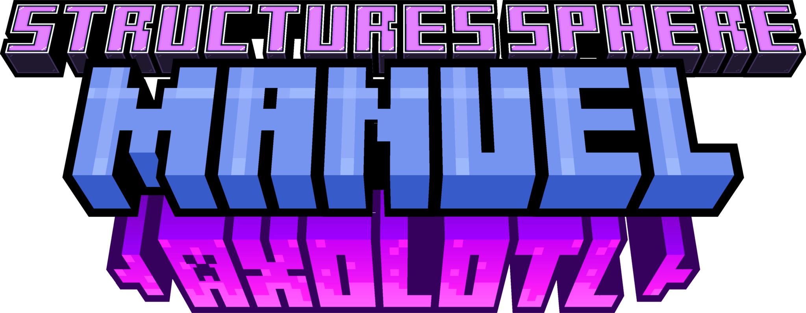
Manuel de l'Axolotl
Un site de FloLeCrafteur
Un site de FloLeCrafteur
Pour commencer, récupérez les blocs requis pour cette structure. Vous aurez besoin de:
Terracota Blanche: 286 (4x64 + 30 blocs)
Terracota Rose: 96 (64 + 32 blocs)
Béton Noir: 2
Béton Violet: 2
Après avoir rassembler tous les blocs, vous pouvez commencez à faire une base comme ceci:
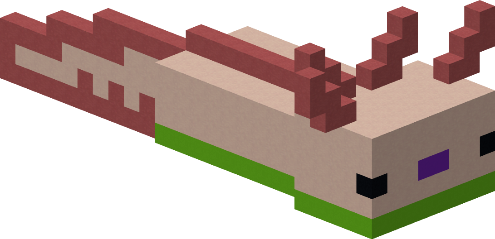 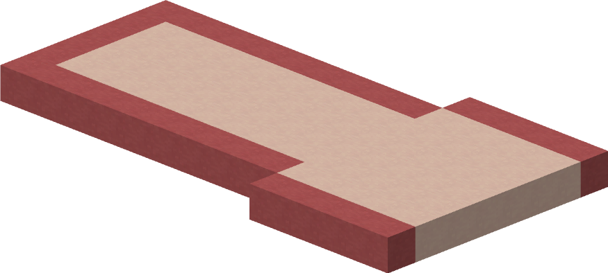 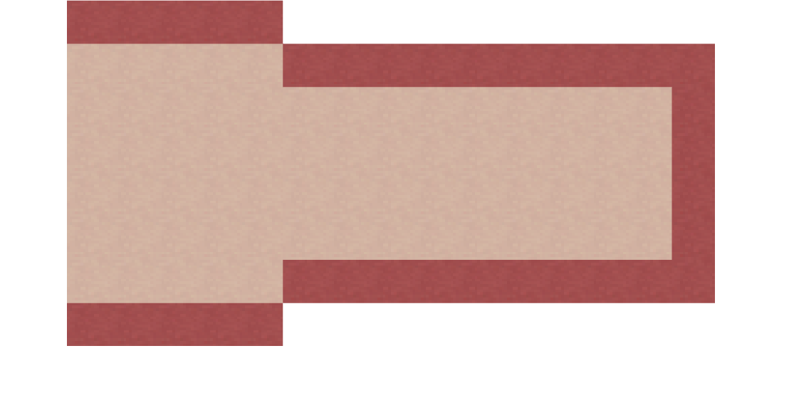Ensuite, vous pouvez continuer à faire le contour
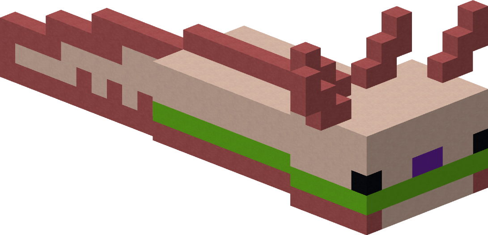 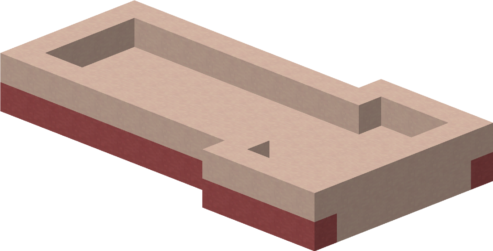Maintenant, vous pouvez lui placer ses yeux et sa bouche
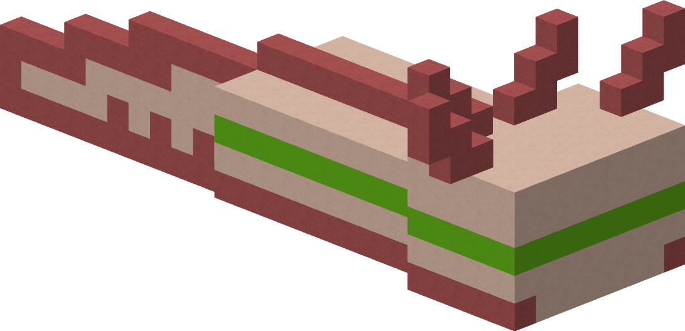 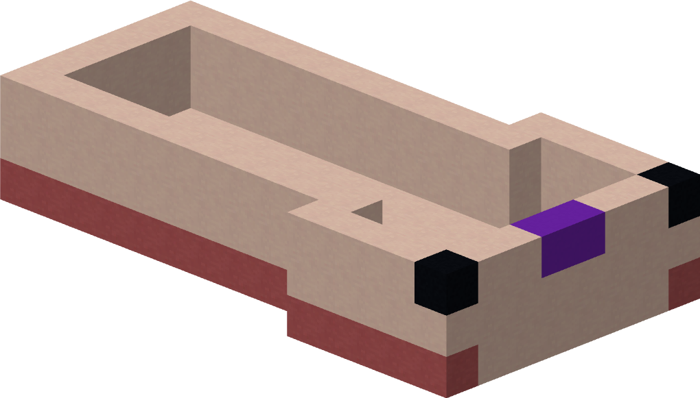Désormais, il est temps de refermer son corps
 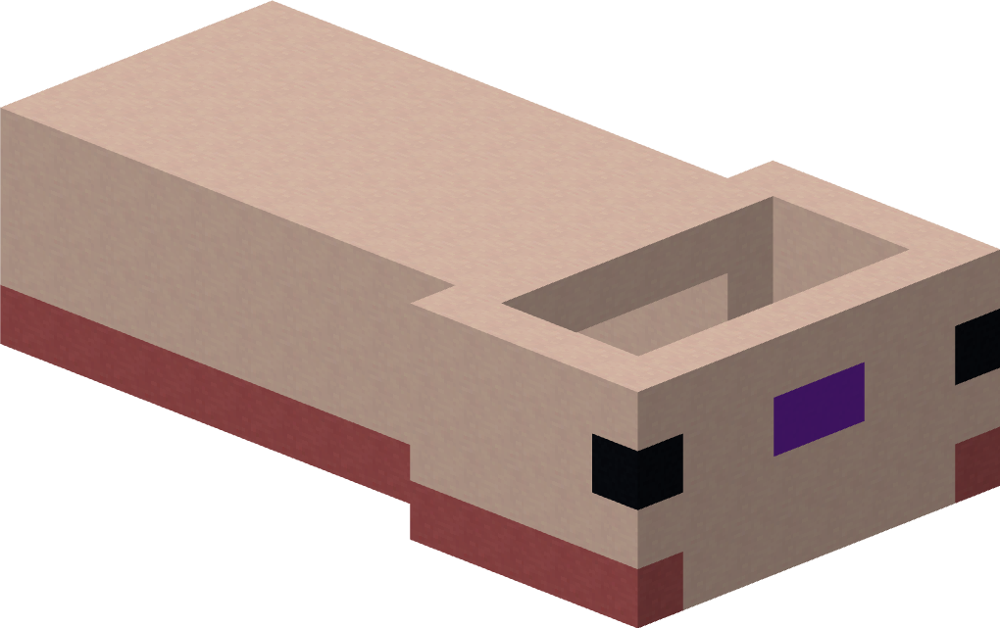
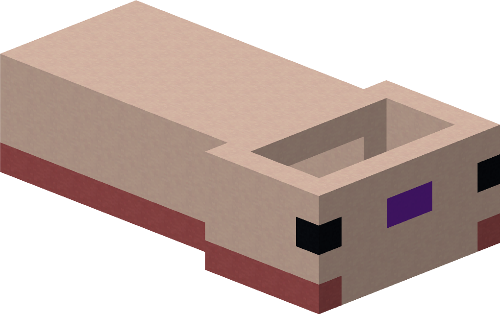
Et maintenant, vous pouvez refermer sa tête
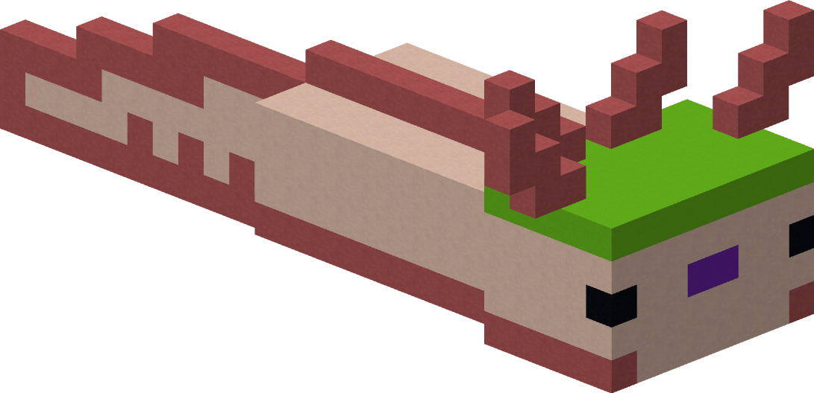 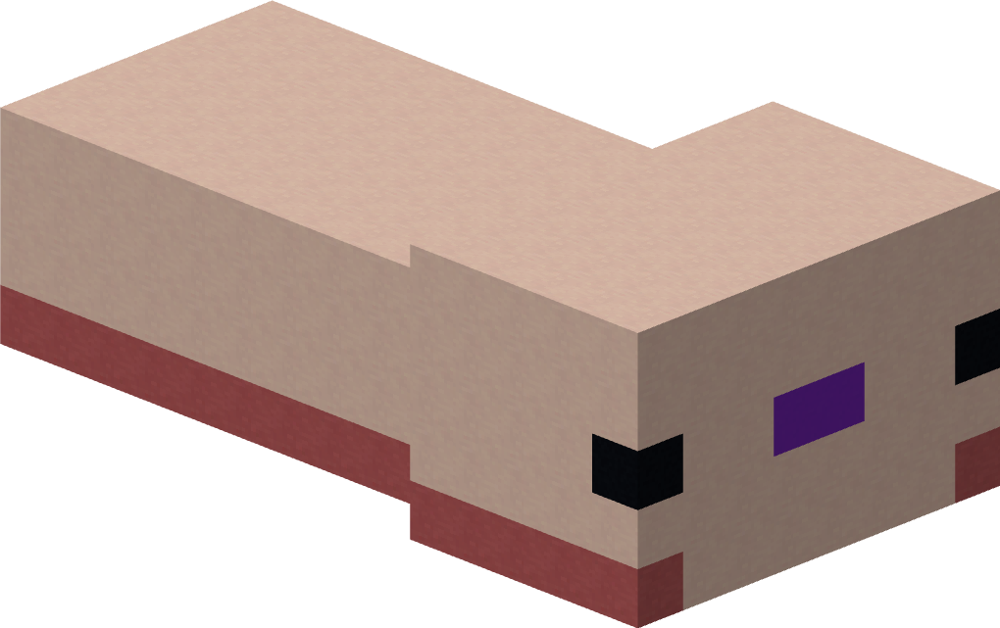Il est désormais temps de lui rajouter les détails!
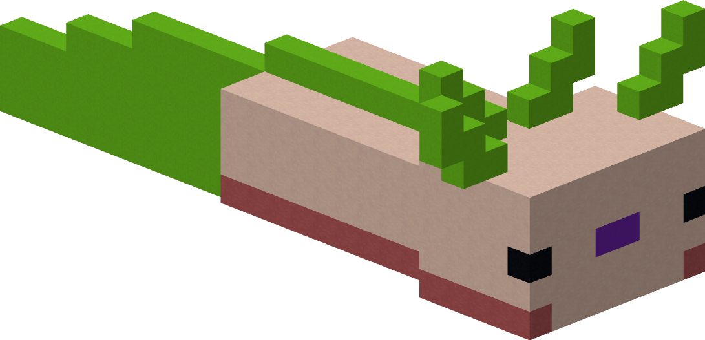 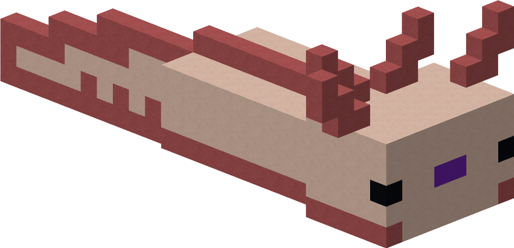 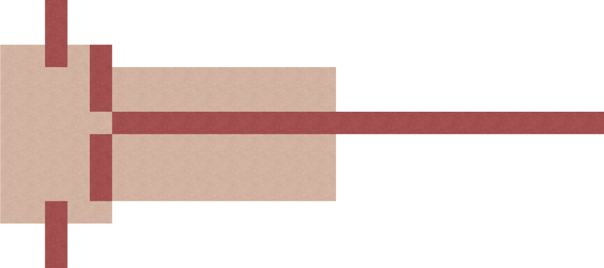 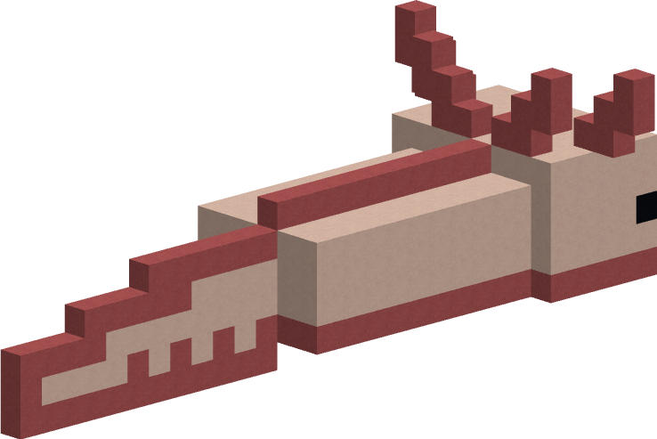 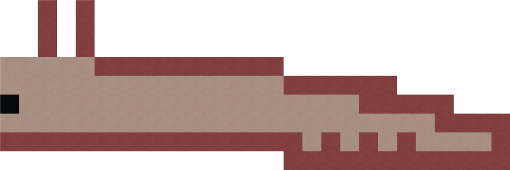